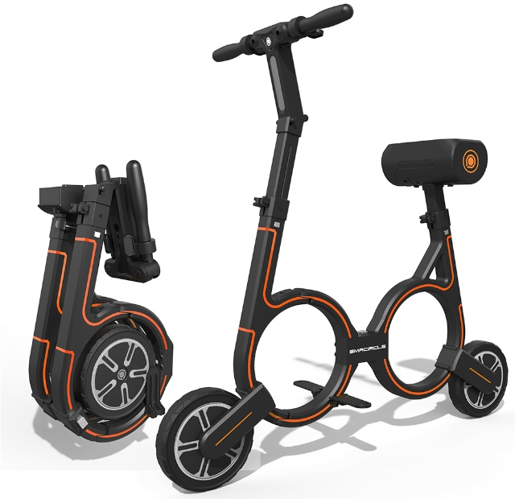

Smallest and Lightest E-Bike
Ebikes are an incredibly convenient way of commuting, but their bulky size can make them difficult to get around.Enter the SMACIRCLE S1, the world’s smallest and lightest ebike.
Ebikes are an incredibly convenient way of commuting, but their bulky size can make them difficult to get around.Enter the SMACIRCLE S1, the world’s smallest and lightest ebike.
This ebike is super portable because it folds up: in just five quick steps it becomes small enough to fit in a backpack.
if you run out of power by the end of your commute, it just takes three hours plugged in to give it enough power to go back.
Ebikes are an incredibly convenient way of commuting, but their bulky size can make them difficult to get around. Enter the SMACIRCLE S1, the world’s smallest and lightest ebike. This ebike is super portable because it folds up: in just five quick steps it becomes small enough to fit in a backpack. That makes it perfect for commutes that take you places you wouldn’t want to take the average bike. If your commute involves a jaunt on the subway or a trip up a flight of stairs, you can just fold up the 17-pound SMACIRCLE S1 and easily go on your way. The bike can travel up to 12 miles on a charge, at a speed of around 12mph. And if you run out of power by the end of your commute, it just takes three hours plugged in to give it enough power to go back. All in all, this is a fantastic choice for commuters who are just a bit farther from work to practically take a standard bike. The SMACIRCLE S1 ebike lets you make an environmentally friendly bike commute without showing up at the office drenched in sweat.
Price: $1,399
